Posted on March 16, 2024 .
Last updated on 2024-05-11.
Welcome! This page gives a rough description of my personal computing stack.
I’ve seen a few people around the web with a page similar to this one, and I thought I’d try my hand at it too. I’ve added a rating to each item, and a brief sentence trying to give my overall thoughts about it. You’ll notice most of the ratings are 4 or 5 out of 5; generally if something is lower than that, it won’t make it into regular use!
Hardware
Main Devices
Framework 13 AMD
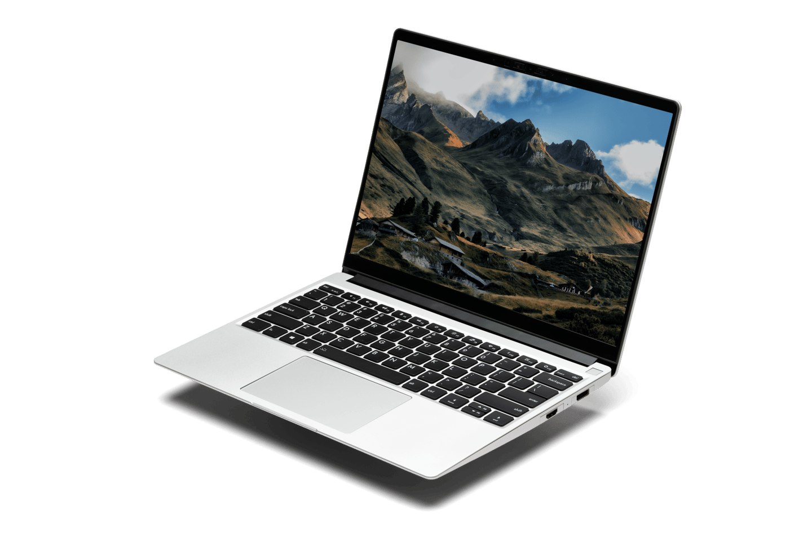
5/5 - It just feels dependable.
At the start of 2024, I bought a Framework 13 AMD, which had just released. This was to replace my previous laptop, an XPS 13 7390 2-in-1. That machine was lovely in most aspects, but I was constantly running low on RAM, and the webcam and fingerprint sensors didn’t have driver support on Linux. The Framework, of course, has perfect Linux support, and given the whole gimmick of the device is to be upgradeable, being stuck on 8GB of RAM will not be an issue. I’m also in the process of replacing my desktop with this, since it gets roughly the same performance!
reMarkable 2
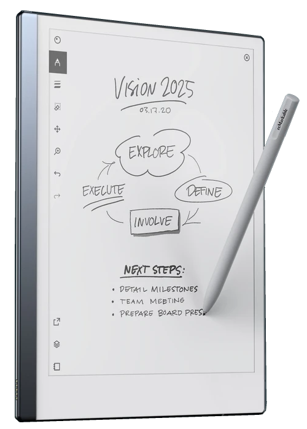
5/5 - Invaluable for research
The reMarkable has fully replaced paper for me. I got it for ~£170 including the pen from a friend who no longer needed it. That’s an absolute bargain, and knowing how much I like using it, I’d probably buy one full price.
It’s sleek, responsive (or as responsive as e-ink can be), and very light; only weighing 400g, it’s lighter than the notebook I used to carry. Reading PDFs on it is a dream, and the writing experience is the best out there; the feel is roughly similar to a ballpoint pen on paper. In this regard, it is way better than any other tablet I’ve tried, even with a paper-like screen protector.
POCO X4 Pro 5G
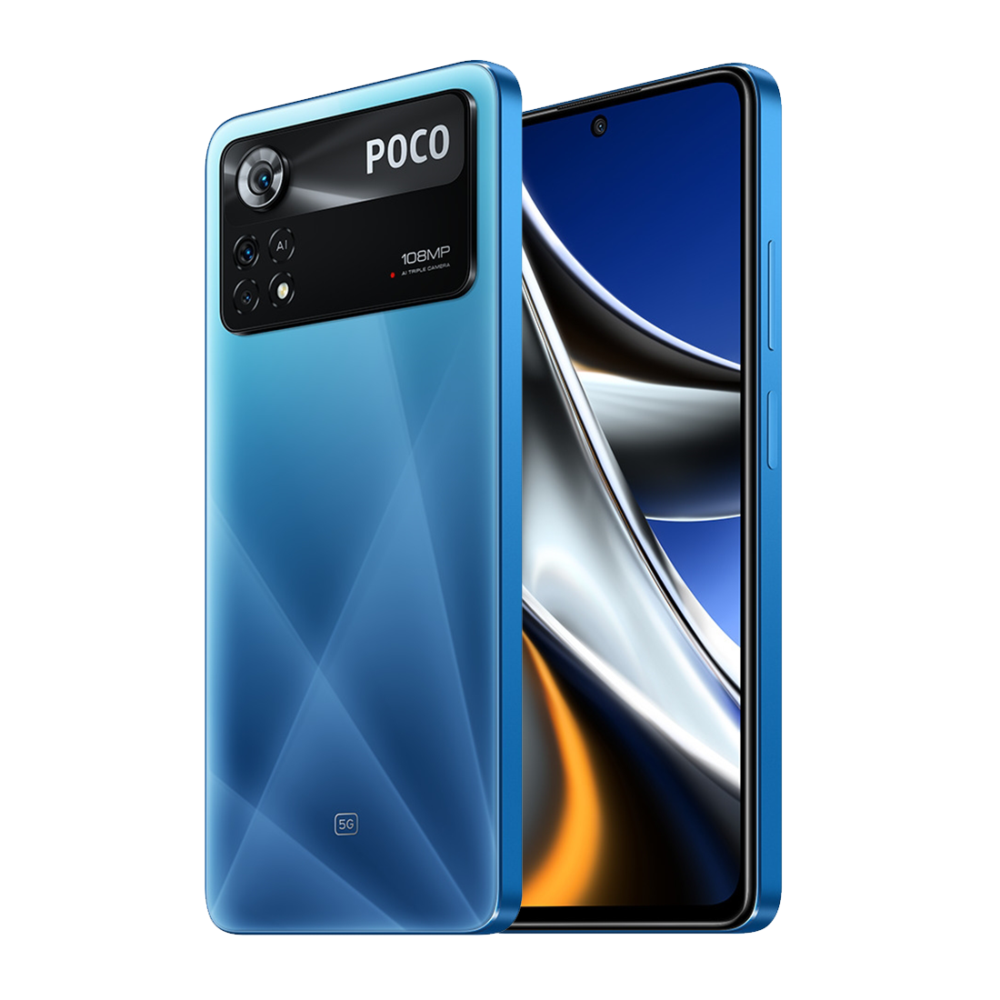
4/5 - Does the job, plenty of alternatives available.
This is a very cheap Android phone for its specifications: 120Hz screen; decent battery; okay camera quality; and a lovely blue colour. It even comes with an IR blaster of all things! I managed to get it for only £160 in total. I’m not someone who wants to be using their phone all that much, so it does the job for me. As a bonus, it comes with a compact 67W USB-C power delivery charger, which is insane, and conveniently enough to charge my laptop from. By this point I use USB-C exclusively (save for my watch) to charge things, so a high-quality charger included for free is a very welcome surprise.
Topton R1 Pro
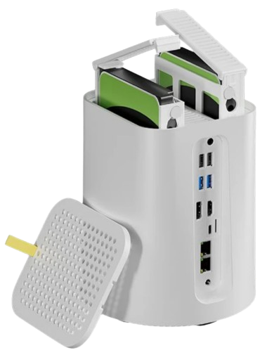
5/5 - A very good deal, and a NAS works so much better for me than a desktop.
This is a cute two bay NAS enclosure with an Intel N100-based motherboard I recently picked up. As mentioned above, I’m trying to get rid of my desktop computer, primarily because it draws a lot of power for the amount I use it these days. However, there’s a bunch of small services I run on it, and I’d rather not run them on a VPS since they contain sensitive personal information. This thing only draws around 25W when my drives are being accessed, compared to the 100W my PC drew.
It was about £200 in total (including 16GB of RAM), which is a very good price for an entry-level NAS. I already had the storage from my old desktop; a 512gb 7Gbps NVMe SSD for the boot drive, and two 3.5 inch HDDs (8TB and 1TB). I run Proxmox on it. You can see which services I’m running in the software section.
Peripherals
Logitech Pebble
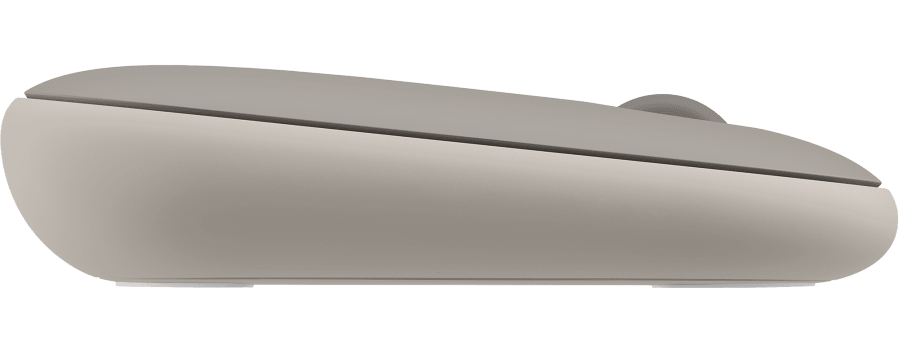
4/5 - Beats a touchpad
This is a pretty uncomfortable mouse to use for long periods of time. Luckily, that’s not what I bought it for; this is for when I need to do some work that would be annoying on a touchpad, but I don’t want to have to lug a full mouse around.
Its design is surprisingly clever, ignoring the lack of ergonomics; the USB receiver and (AA) battery are hidden underneath the top of the mouse, which is held in place magnetically against some standard screws - a very smart solution! It’s got a nice button that toggles between the USB receiver and Bluetooth for connectivity, which is handy if you need to switch between two devices frequently.
Between Pro
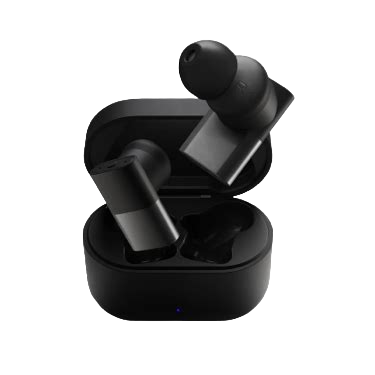
5/5 - Although they have a newer model that’s presumably better
These true wireless earbuds are great: they’re very comfortable; last for absolutely ages on a single charge; never fall out; block out most environmental noise even without ANC; and sound amazing. The box is fairly bulky compared to e.g. AirPods, but Edinburgh weather tends to force you to wear a jacket, so it’s not that big of a deal for me. I use them daily to listen to music when walking around or shopping, and also during work calls. The mic quality is average I’d say; I think you always end up with worse quality mic audio on these sorts of earphones since the mics are nowhere near your mouth.
If I were looking to buy some of these today, Status Audio have a newer model out that has ANC and an app, which I presume is probably better.
Status Audio Flagship ANC
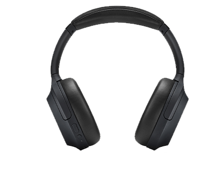
5/5 - Great sound for the price.
Given how much I liked the Between Pros, I ended up snagging a pair of Flagship ANCs, also by Status Audio. They’ve got good sound and battery life, with a generally convenient touch surface on the right ear to control your music. They’re great for focusing in a co-working environment. I think they’ve been discontinued, which is a shame; the noise cancelling is really good, and the cheaper replacement model doesn’t have the same system.
One really important feature about these for me is that, while they are primarily wireless headphones, you can connect an aux cable to them with zero latency - you’d be shocked at how many Bluetooth devices have a 6-700ms delay even when using wires! Because of this, I find it super convenient to use these with my synths if I want to play later at night.
Yubico Security Key
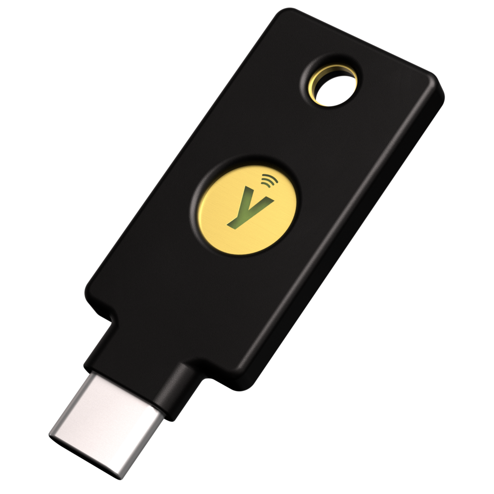
5/5 - Can’t complain, it beats SMS any day.
For 2FA, I’ve been making use of this thing. Note that it isn’t a Yubikey proper! It only does FIDO U2F, but that’s enough for me; I’m not encrypting many emails.
Smart Devices
Emporio Armani Connected Gen 2 Smartwatch
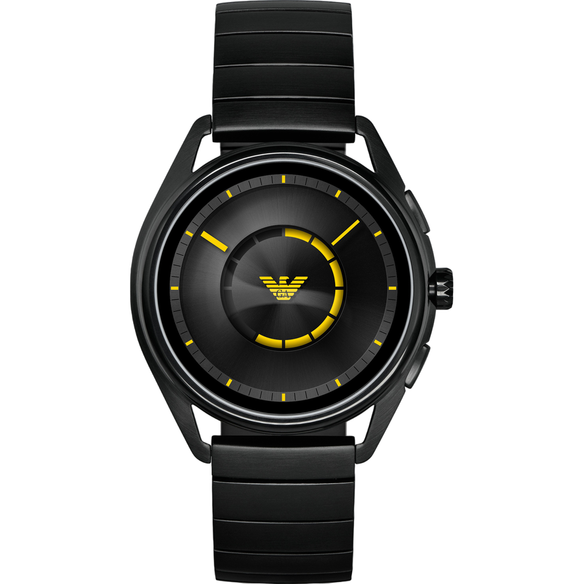
4/5 - Looks very nice for a smartwatch
I received this smartwatch as a gift. It’s a really nice design for a smartwatch; very far from the silicon straps and circular edges of the Apple and Pixel watches. Unfortunately, it runs Wear OS, which is somehow an even worse version of Android than all the other versions of Android. Its battery life doesn’t last a day, and its app support is now limited, given its age. Still, as a day-to-day watch, it looks nice, and keeps track of my activity pretty well.
Smart lights
5/5 - Assuming you have Home Assistant.
These things are great. I have Home Assistant set up to turn them on alongside my alarm, and turn them off when I start sleep tracking or leave the house. They also adjust their colour temperature and brightness throughout the day.
Renpho Smart Scales
4/5 - Pretty much the same price as regular scales but they do way more.
Since I’m trying to get a better understanding of my health, I thought smart scales were a decent option to get started. There’s a bunch of different models that Renpho sells, and I’m not sure what the differences are between them; I just picked my one based on aesthetics. They can connect over Bluetooth or Wi-Fi to an app, which will then show you:
- Your weight
- Your body fat percentage, broken down into visceral and subcutaneous
- Your muscle mass
- Your BMI and “metabolic age” (who cares)
- And several more which I don’t bother checking
They’re good, but I do question the 11.5% body fat they give me. Mostly, I end up just caring about the trend lines.
Wanbo T2 Max
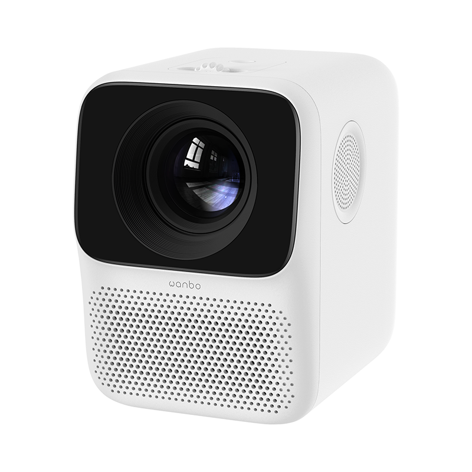
3/5 - Software is terrible, but it’s cheap!
This was the cheapest true 1080p projector I could find. It runs a very laggy version of Android 6, but I think newer models have a much more powerful CPU and a newer Android version. I generally only use this to connect other devices through HDMI. Given that, as a student, my housing is pretty non-permanent, this is a lot more transportable than a TV (it is tiny), and gives a much bigger image. Plus, projectors are just more fun.
I’d definitely recommend having a projector, but probably not this one.
Software
NixOS
The main reason I use NixOS is it lets me keep my system configs all in one place. When I switched to my Framework, it took me 5 minutes (excluding time taken to download files) to get it set up the exact way I had my old laptop set up, and I was immediately able to be productive on it.
It’s also nice being able to revert to a previous build of my system if something breaks and I don’t have time to fix it.
Emacs
I use Emacs mostly out of a lack of choice. There aren’t really any other editors that have support for the languages I usually write. That being said, I do enjoy the customisability you can get with it.
Firefox
I use Firefox as my main browser, with Sideberry to give a vertical tree structure to my tabs (of which I usually have around 50 open at any given time).
Filesystem Structure
I have a rather unorthodox home directory.
At its core, my filesystem structure has two main folders:
- ~/docs
- Permanent, synched storage for my work and important files.
- ~/inbox
- Effectively a downloads folder. It’s shown on my desktop by default, to discourage building up too many files. The downloads folder on my phone is also synched here to make it easy to copy files between devices.
Synching is accomplished via Syncthing. Large media (photos, videos, etc.) is kept on my NAS, not locally. I find this system really helps me keep on top of my files; generally I know exactly where everything important to me is saved. Keeping all my important files in one folder makes backups simple too.
Personal Finance
I have a very complicated setup for managing my personal finances. It’s based around hledger and Observable notebooks, to provide an overview of my spending and saving across multiple accounts all in one place. It’s a little janky, and took an age to set up; I wouldn’t recommend this exact setup for people to use, but I certainly would recommend they look into something similar like YNAB.
Services
- Immich
- Good alternative to Google Photos. I used to use photoprism, but Immich is generally faster.
- Jellyfin
- A great replacement for streaming service paralysis.
- Tailscale
- Invaluable; I no longer need to worry about port forwarding and secure auth to access my devices remotely.
- VS Code Server
- I keep this running in a scratch container for writing quick scripts. Very handy!
Other tools
Here’s a bunch of small utilities I use that don’t deserve their own subsection.
- Warp terminal
- It recently dropped for Linux, and it’s a vastly better experience than any other terminal emulator.
Fun
Cardputer
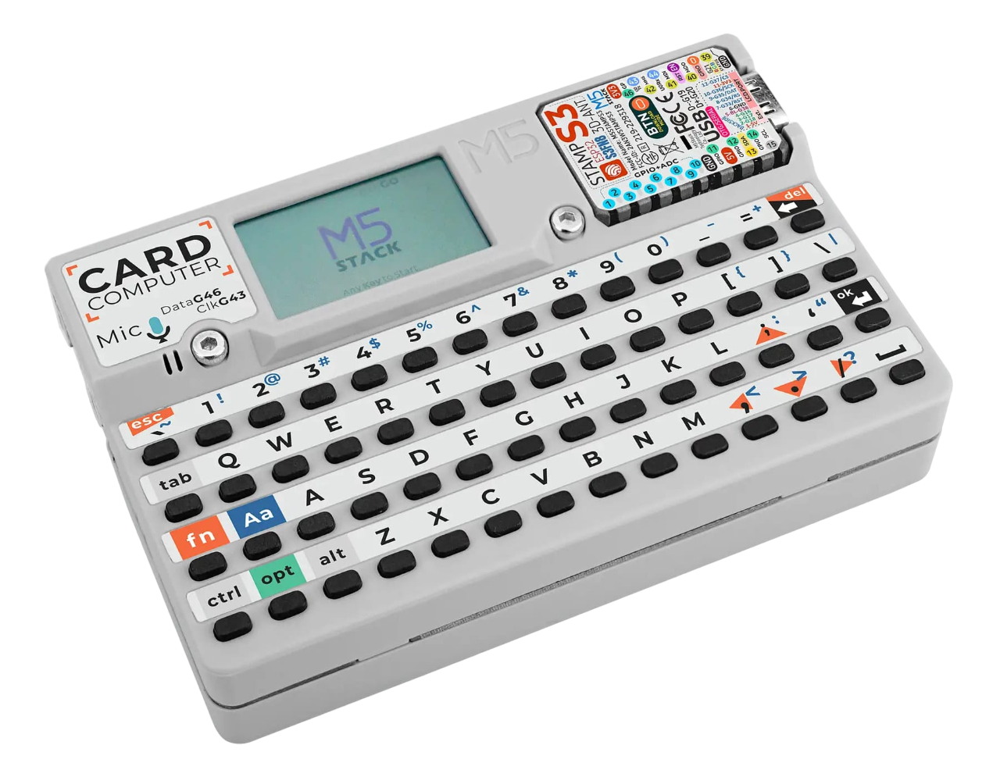 5/5 - I can’t describe how much I love this.
This thing is probably my favourite piece of technology that I own.
It’s £30, the same dimensions as a credit card (albeit with a depth of about a centimetre), and has:
- An ESP-32 as its main source of computation
- Wi-Fi and Bluetooth connectivity (as a result of the ESP-32)
- A tiny LCD
- A tiny keyboard
- A speaker and microphone
- An IR blaster
- A battery backpack, as well as a small internal battery
- A micro SD card slot
- An exposed 4-pin connector that speaks I2C
- Some pretty strong magnets
- LEGO headers
It’s so much fun to play around with. Being effectively a normal ESP-32 with a bunch of pre-connected peripherals, you can program this device from the Arduino IDE. I’ve loaded a custom Forth interpreter on it that can read programs from the SD card, to get around memory restrictions of the device itself. I actually use this thing in my daily life as a pomodoro timer; the magnets make it easy to prop up against metallic objects, and the simplicity of the device means you can’t really get distracted with it (Of course, you can easily distract yourself programming it).
Synths
Behringer DeepMind 6
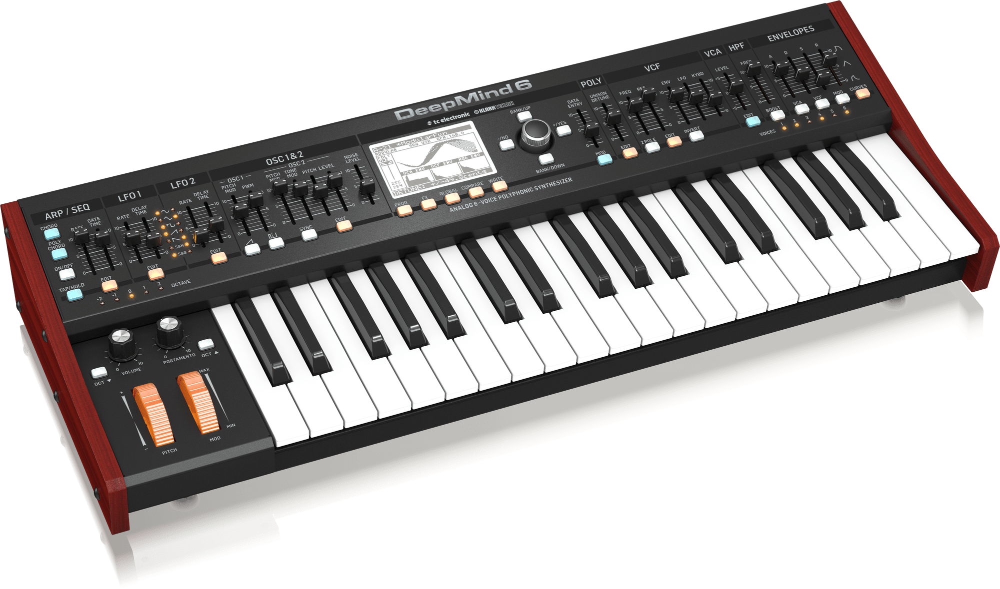
5/5 - Very fun synth to use!
This hardware, analogue synth has six voices of polyphony and sliders all over it. It’s an absolute blast to play with!
UNO Synth
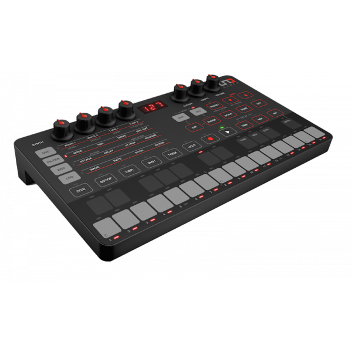
5/5 - A nice portable monosynth!
This was the first synthesizer I ever bought. It’s got a very strong analogue sound engine for something of this size and budget, and as such I still use it frequently for basslines alongside the DeepMind 6. This use case is actually aided by the capacitive touch pads; they make it very easy to slide between notes.
It’s portability is unmatched; it’s a little bit taller than an A5 piece of paper, can run on either AA batteries or a USB power supply (and thus a USB power bank), and weighs barely anything. You can use MIDI either over USB, or via a MIDI-to-2.5mm jack adaptor provided.
The main downside in my opinion is that the sequencer is only 16 steps; the UNO Drum below has 64 steps and the ability to program “songs” as a list of sequences to go beyond that. As a result, I generally either play this manually or just play a pre-written bassline over MIDI.
UNO Drum
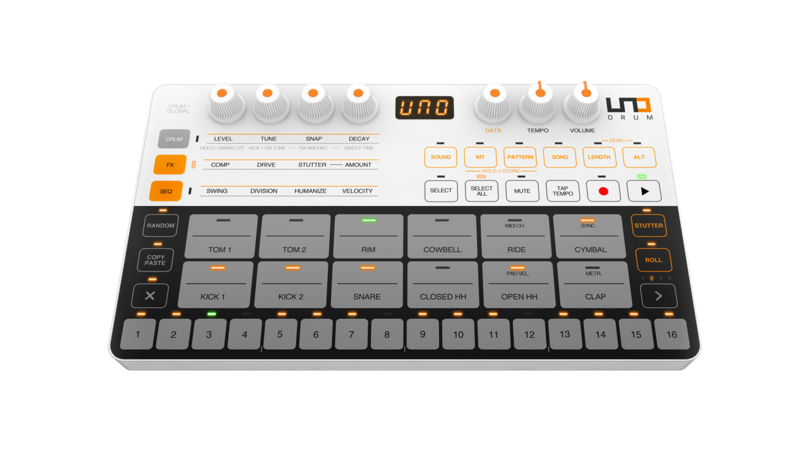
5/5 - Great little drum machine
This obviously pairs well with the UNO Synth above, and has many of the same portability features. It’s partially analogue, but mainly digital, and allows uploading of custom sample sounds over USB.
One nice feature is the line in port; this is routed through the effects engine, meaning you can use it as a compressor in a pinch.